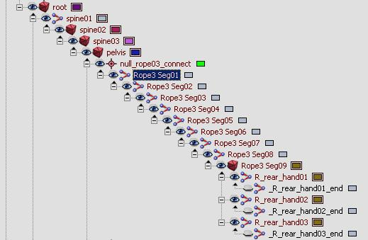
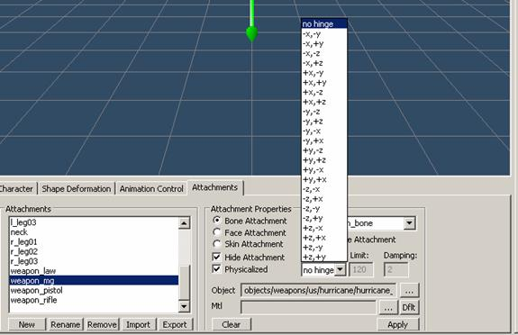

Overview
Introduction to Character Rope
Character ropes can have multiple purposes, and can mainly be used for cloth and physicalized entities attached to characters. The majority of a rope setup and its properties, actually correspond to cloth setup as well so both setups should be considered and read through.
An example of a hierarchy; Rope3 is a physicalized rope.

Character Ropes
- In order to have some character bones simulated using rope physics, you have to name the corresponding bones rope [rope number] and seg[segment number], that is, Rope1 Seg01. The bones in the same rope strand need to have identical rope numbers and continuous numbering for the segments. For example, Seg01, Seg02, Seg03. The rope number can go from 1-9, and then needs to be 01, 02, 03, and so on. The roots of each strand (Seg01) should be linked to a point helper named null_[rope name]_connect, which in turn should be linked to the bone to which the ropes are required to be attached.
- All segments in one rope should have approximately the same length. Note that a rope bone should never be the leaf bone (without children) because the bone after the last rope bone is used to provide a terminal rope vertex. Also note that currently, ropes cannot connect two physicalized parts of a skeleton; they can either be roots (for example, a hanging light cord), or leaves (for example, a character's ponytail or braid).
- In the game script, you should first create some physical entity and then load and physicalize the character model. By default, all bones are physicalized (unless the Phys counterpart skeleton is present, which will most likely only be the case for characters). However, note that rope bones normally should not be a part of the main character physics (which, for a hanging lamp, will most likely be a rigid body). Thus, they should have a nonphysical keyword in their user-defined properties (as well as other bones that do not represent physical geometry).
- During the physicalization, ropes are created and stored internally in the character system. The first end of the rope is the one that is closer to the root bone. Both the 1st and the 2nd ends are automatically tied to the character physical entity, if they are connected to its physicalized parts (not necessarily, directly).
- In order to alter the parameters of rope physics, one should call:
- SetCharacterPhysics(slot_number,"ropename", PHYSICSPARAM_ROPE,param_table).
- param_table can contain the following fields:
- length - Full length of the rope.
- entity_id_1 - Entity ID that the 1st rope end is tied to (-1 if statically tied to world, -2 if not tied at all).
- entity_part_id_1 - Entity part ID that the first rope end is tied to.
- end1 (vector) - The first end attachment point (if unspecified, it is assumed to be the current end point position).
- end2 (vector) - The second end attachment point.
- check_collisions - 1 if the rope should collide with the environment (otherwise, 0).
- coll_dist - Rope thickness for collision detection.
- Currently, ropes cannot apply forces or otherwise alter the behavior of the objects that they are colliding with, like saving the objects that they are directly tied to (and tied objects receive impulses only when the rope is fully strained along a straight line).
- Stiff ropes can be mimicked by having a few rope segments (bones) and setting up mesh skinning so that visually, at joint points, the rope bends smoothly, rather than abruptly.
Adjusting Rope Properties
- To physicalize the ropes and make them active, you also need to create phys bones for the first segment of each bone strand. These phys bones should be linked to the phys mesh of the character body. To activate collision of the ropes with the body and environment and/or activate the gravity, you need to put active_phys gravity in the UDP (User Defined Properties). These are the settings needed to activate certain properties of the rope's behavior and properties (set in the Hierarchy/IK/Rotational Joints panel):
- character collision – Y axis active, will collide with the local character.
- environment collision – X axis active, will collide with the environment.
- joint limit – Spring tension x, this will be the per-bone rotational limit for the chain.
- stiffness – Maximum x limit.
- stiffness decay – Maximum y limit.
- damping – Maximum z limit.
- max time step (default 0.02) – Spring tension y.
- friction – Spring tension z.
For more information on character ropes and cloth please refer to the following pages:
Character Hinge Attachments

When adding CGF bone attachments in the character editor, you can create hinge joints to give the rigid attachments a realistic, secondary motion. Select the bone attachment, then check Physicalized, select a hinge rotational axis, and specify some values. It takes some trial and error to get it right, but the results are great.
Introduction to Jiggle Bones
The option exists to setup joints which simulate a jiggle, and this can be used to simulate various parts of a character. For information on how to set this up, please visit: